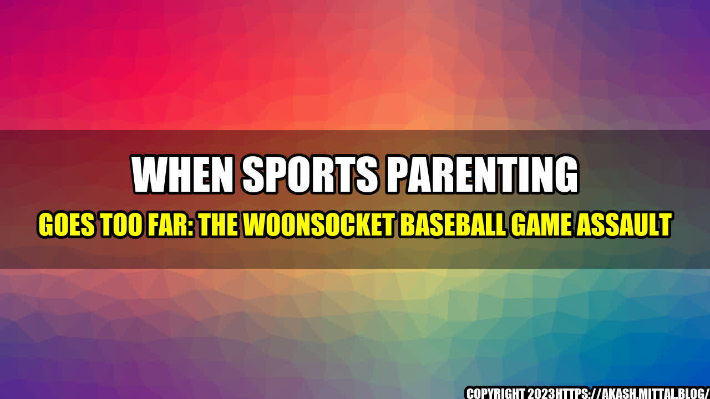

A Day at the Ball Park Turns Violent
It was supposed to be a beautiful day for baseball in Woonsocket, Rhode Island. The sun was shining, the sky was blue, and the local little league team was playing their hearts out on the field. Parents lined the bleachers, cheering on their kids and enjoying the game. But suddenly, everything went wrong.
A disagreement between two parents turned into a shouting match, and then a pushing match, and then a full-on brawl. Children were running and screaming as their parents fought, throwing punches and knocking each other to the ground. It was a scene straight out of a movie - except it was all too real.

The Ugly Side of Sports Parenting
This incident in Woonsocket is just one example of the ugly side of sports parenting. All too often, parents become overly invested in their children's athletic performance and let their emotions get the best of them. They yell at their kids, the coaches, and the other parents. They put immense pressure on their children to succeed, sometimes to the point of abuse. And, as we saw in Woonsocket, they can even become physically violent.
The negative effects of this type of behavior are numerous. Children can feel embarrassed, ashamed, and even scared when their parents act out at sporting events. They may become disengaged from the sport and stop enjoying it altogether. They may also develop a negative association with exercise and physical activity, which can have long-term health consequences.
But it's not just the children who suffer. Coaches and other parents can feel uncomfortable and unsafe when aggressive parents are present. And, of course, there are legal consequences when fights and other violent incidents occur.
How Can We Prevent Sports Parenting Violence?
Clearly, something needs to be done to address the issue of sports parenting violence before it escalates even further. Here are three things that parents, coaches, and organizations can do to prevent incidents like the one in Woonsocket:
- Model good behavior. Parents and coaches should lead by example when it comes to sportsmanship. This means staying calm, respectful, and positive during games and practices. It also means treating all players fairly and with respect.
- Set clear expectations. Organizations can prevent incidents by setting clear expectations for parents when it comes to behavior at sporting events. This might include guidelines for appropriate language, conduct, and conflict resolution.
- Promote communication. When conflicts do arise, it's important to resolve them in a calm, rational manner. Organizations can facilitate healthy communication between parents, coaches, and players to ensure that conflicts are addressed before they become serious.
Conclusion
The incident in Woonsocket was a wake-up call for all of us who are involved in sports parenting. We cannot continue to let our emotions spiral out of control to the point where violence erupts. We need to take concrete steps to promote healthy, positive, and safe environments for children to participate in sports. By setting examples, having clear expectations, and promoting communication, we can ensure that incidents like the one in Woonsocket never happen again.
Curated by Team Akash.Mittal.Blog
Share on Twitter Share on LinkedIn